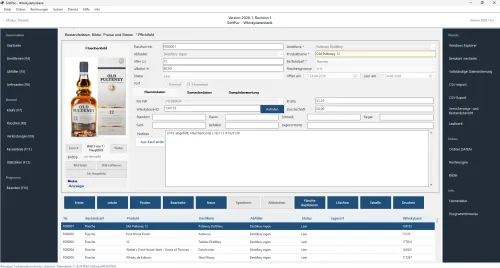

SoftPac Whiskydatenbank – Whisky-Sammlung einfach und lokal
Produktprofil · Marktplatz-Daten 2026-10-13 · Verkaufsseiten-Recherche 2026-10-13 · Kategorien: Software, Food & Drink
- SoftPac Whiskydatenbank – Whisky-Sammlung einfach und lokal ist ein/e Software in Software und Food & Drink, vertrieben über den Digistore24-Marktplatz von Anbieter dejo777, gelistet seit 2026-08-25.
- Listenpreis $56.29; Digistore24 meldet — Checkout-Konversion, — Stornierungsquote und 30 % Affiliate-Provision.
- Verdienst pro Verkauf (Affiliate): $16.88 (Anbieter-seitige Statistik, keine Prognose).
Interesse an SoftPac Whiskydatenbank – Whisky-Sammlung einfach und lokal? Aktueller Preis, Boni und Garantiebedingungen finden Sie auf der offiziellen Seite des Anbieters:
Offizielle Verkaufsseite ansehen
Affiliate-Link (Werbung) — wir verdienen ggf. eine Provision, ohne Mehrkosten für Sie.

Marktplatz-Daten
| Produkttyp | Software |
|---|---|
| Preis | $56.29 (Single payment) |
| Affiliate-Provision | 30 % |
| Garantie/Rückgabe | Laut Verkaufsseite des Anbieters — vor dem Kauf auf der offiziellen Seite prüfen |
| Anbieter | dejo777 (gelistet seit 2026-08-25) |
| Marktplatz-Statistiken* | Checkout-Konversion — · Stornoquote — · Verdienst/Verkauf $16.88 |
* Anbieter-seitige Statistiken von Digistore24; sie hängen von der Traffic-Qualität ab und sind keine Prognose.
Marktplatz-Beschreibung des Anbieters
Die SoftPac Whiskydatenbank ist eine Windows-Anwendung für private Whisky-Sammler und Whisky-Enthusiasten. Nutzer können ihre Flaschen, Käufe, Samples, Verkostungsnotizen, Fassanteile und Auswertungen strukturiert verwalten. Belege und Zertifikate lassen sich den jeweiligen Einträgen zuordnen, Statistiken und Datensicherungsfunktionen ergänzen den Funktionsumfang. Ein besonderes Merkmal ist die lokale Datenhaltung ohne Cloud-Zwang : Die persönlichen Sammlungsdaten bleiben auf dem eigenen Windows-PC. Die Anwendung wird über den Microsoft Store installiert und aktualisiert. Die Nutzung erfolgt über eine separat erworbene SoftPac-Lizenz. Endkundenpreis: 59,90 € einmalig – kein Abonnement. Affiliate-Provision: 30 %. Besonders geeignet für Blogs, YouTube-Kanäle, Newsletter, Social-Media-Angebote und Communities rund um Whisky, Tastings, Samples und Sammlungen. Für Affiliates stehen eine eigene Support-Seite, freigegebene Produktaussagen und aktuelle Produkt-Screenshots zur Verfügung. Eigene Werbetexte und Creatives sind ausdrücklich möglich, solange die verwendeten Produktangaben den freigegebenen Aussagen entsprechen.
Von der Verkaufsseite des Anbieters
Seitentitel: SoftPac Whiskydatenbank – Whisky-Sammlung unter Windows verwalten
Meta-Beschreibung: Whisky-Sammlung, Käufe, Samples, Verkostungsnotizen und Fassanteile unter Windows verwalten. Lokale Datenhaltung, kein Abo, einmalig 59,90 €.
Hauptüberschrift
Ihre Whisky-Sammlung. Ihre Daten. Ihr Überblick.
Abschnitts-Überschriften
- Mehr als eine Liste Ihrer Flaschen
- Alles rund um Ihre Sammlung an einem Ort
- Ihre Sammlung gehört Ihnen – nicht einer Cloud
- Weitere Funktionen
- Ein Blick in die SoftPac Whiskydatenbank
- Eine Lizenz. Einmal bezahlen.
- In wenigen Schritten startklar
- Gut zu wissen
Einstiegstext
SoftPac Whiskydatenbank für Windows Ihre Whisky-Sammlung. Ihre Daten. Ihr Überblick. Verwalten Sie Ihre Whisky-Sammlung, Käufe, Samples, Verkostungsnotizen und Fassanteile übersichtlich an einem Ort – lokal auf Ihrem eigenen PC und ohne Cloud-Zwang.
Die Zahlungsabwicklung erfolgt über Digistore24. Installation und Programmaktualisierungen erfolgen über den Microsoft Store.
Ihre Sammlung im Mittelpunkt Mehr als eine Liste Ihrer Flaschen Eine Whisky-Sammlung wächst schnell. Mit jeder Flasche kommen weitere Informationen hinzu: Destillerie, Abfüller, Kauf, Preis, Beleg, Verkostung, Sample oder vielleicht sogar ein Fassanteil.
Die SoftPac Whiskydatenbank bringt diese Informationen in eine nachvollziehbare Struktur – ohne dass Sie Ihre Sammlung auf mehrere Tabellen, Notizen und Ordner verteilen müssen.
Recherche-Methode: rohes HTML · 818 Wörter · Qualität: rich · recherchiert am 2026-10-13. Vollständige Recherche-Datei (MD) ↗
Anwendung — laut Anbieter
Warum wird die Anwendung über den Microsoft Store installiert? Der Microsoft Store übernimmt die sichere Installation und Bereitstellung von Programmaktualisierungen. Die SoftPac-Nutzungslizenz erwerben Sie separat über Digistore24.
Kann ich meine Daten sichern? Ja. Die Anwendung enthält Funktionen für eine vollständige Datensicherung sowie zur Prüfung und Wiederherstellung von Sicherungen.
Wo bekomme ich Hilfe? Ein ausführliches deutschsprachiges Benutzerhandbuch ist direkt in die Anwendung integriert. Zusätzlich steht der SoftPac-Support zur Verfügung.
Weitere Bilder (von der Verkaufsseite des Anbieters)
Bilder stammen von der offiziellen Verkaufsseite des Anbieters und zeigen das Produkt, wie es beworben wird.
Gut zu wissen
- Keine Garantie-Formulierung in unserer Recherche gefunden — bestätigen Sie das Rückgabefenster auf der offiziellen Seite, bevor Sie kaufen.
- Hinweise der Verkaufsseite (wörtlich, nicht von uns geprüft): „Die wichtigsten Antworten zu Kauf, Installation und Datenhaltung."
- Marktplatz-Zahlen (Preis, Provision, Konversion, Stornoquote) — Quelle: offizielle Digistore24-Marktplatz-API (Affiliate-Sicht), Stand 2026-10-13. Gegenprüfung: Marktplatz-Suche nach Produkt-ID 726000.
- Verkaufsseiten-Zitate — Quelle: https://www.softpac.de/ekp/wdb/, abgerufen 2026-10-13 (Methode: rohes HTML). Verify: offizielle Seite öffnen.
- Garantie / Rückgabe — vom Anbieter festgelegt; vor dem Kauf auf der Verkaufsseite bestätigen.
- Nicht von uns geprüft: Produktqualität, Ergebnisse, Testimonials — kein Praxistest für dieses Listing durchgeführt.
Häufige Fragen zu SoftPac Whiskydatenbank – Whisky-Sammlung einfach und lokal
Antworten aus dem Marktplatz-Snapshot (2026-10-13) und der Verkaufsseiten-Recherche (2026-10-13); Anbieteraussagen sind inline gekennzeichnet.
Was ist SoftPac Whiskydatenbank – Whisky-Sammlung einfach und lokal?
SoftPac Whiskydatenbank – Whisky-Sammlung einfach und lokal ist ein Angebot des Typs „Software" im Digistore24-Marktplatz, Anbieter: dejo777, gelistet seit 2026-08-25. Eingepflegt unter Software und Essen & Trinken. Digistore24 wickelt Checkout, Lieferung und Rückgaben ab.
Wie viel kostet SoftPac Whiskydatenbank – Whisky-Sammlung einfach und lokal?
Der Digistore24-Marktplatz listet es für $56.29 (single payment). Preise legt der Anbieter fest und können sich ändern — der Marktplatz-Eintrag oben zeigt den Schnappschuss; die offizielle Verkaufsseite zeigt den aktuellen Preis.
Gibt es eine Geld-zurück-Garantie für SoftPac Whiskydatenbank – Whisky-Sammlung einfach und lokal?
Unsere Verkaufsseiten-Recherche hat keine explizite Garantie-Formulierung gefunden. Viele Digistore24-Produkte bieten 60 Tage Geld-zurück, aber das legt jeder Anbieter selbst fest — bestätigen Sie es auf der offiziellen Verkaufsseite, bevor Sie kaufen.
Ist SoftPac Whiskydatenbank – Whisky-Sammlung einfach und lokal seriös?
Wir bewerten keine Seriosität — wir veröffentlichen überprüfbare Zahlen: Anbieter dejo777 (gelistet seit 2026-08-25), Checkout-Konversion —, Stornoquote —, Affiliate-Verdienst/Verkauf $16.88 (alles Anbieter-seitige Marktplatz-Statistiken). Lesen Sie unsere 6-Punkte-Bewertungsmethode und entscheiden Sie anhand der Zahlen — oder diskutieren Sie SoftPac Whiskydatenbank – Whisky-Sammlung einfach und lokal auf GitHub.
Wo kann ich SoftPac Whiskydatenbank – Whisky-Sammlung einfach und lokal sicher kaufen?
Nur über die offizielle Verkaufsseite, die auf dieser Seite verlinkt ist (Checkout und Rückgaben laufen über Digistore24). Prüfen Sie dort Preis und Garantie vor der Bestellung. Der Link ist ein Affiliate-Link — der Kauf unterstützt diese Website ohne Mehrkosten für Sie.
Wie erhalte ich SoftPac Whiskydatenbank – Whisky-Sammlung einfach und lokal nach der Zahlung?
Der Checkout läuft über Digistore24: Nach der Zahlung erhalten Sie Ihren Zugang oder Download per E-Mail und in Ihrem Digistore24-Kundenkonto. Lieferdetails für diesen Produkttyp: Software wird digital geliefert — entweder als direkter Download oder per Lizenzschlüssel/Mitgliederbereich nach dem Checkout. Bei Problemen kann der Digistore24-Käufersupport Ihre Bestellung wiederherstellen.
Alle 50 Käuferfragen zu Software — das komplette Kategorie-FAQ.
SoftPac Whiskydatenbank – Whisky-Sammlung einfach und lokal auf Reddit diskutieren
In Community-Threads vergleichen echte Käufer Erfahrungen. Wir verlinken Communities, keine einzelnen Posts — Threads verschwinden, Subreddits bleiben:
- r/de_EDV — deutschsprachige Community mit Diskussionen zu software.
- Reddit-Suche nach „SoftPac Whiskydatenbank – Whisky-Sammlung einfach und lokal" — Live-Ergebnisse, von uns nicht beeinflusst.
- Top-„Erfahrungs"-Treffer dieses Jahr — selbst nach Aktualität filtern.
Passendes auf Amazon.de
Physische Produkte und Zubehör, die häufig zusammen mit SoftPac Whiskydatenbank – Whisky-Sammlung einfach und lokal gekauft werden:
- Software auf Amazon.de — Top-Ergebnisse, Amazon-Ranking.
- Bestseller: Software — live Liste von Amazon, von uns nicht kuratiert.
Werbung: Als Amazon-Partner verdient DigistorePicks DE an qualifizierten Käufen (Partner-tag adminstorede-21). Amazon setzt eigene Preise und Provisionen (niedrige einstellige Prozente — weit unter den 30–75% der Digistore24-Anbieter). Amazon ist ein Convenience-Angebot für Sachprodukte, kein Ersatz für das digitale Produkt oben.
Ähnliche Angebote in Software

Maya: digitale Assistentin für WhatsApp und Telefon Maya beantwortet Kundenanfragen kleiner Betriebe rund um die Uhr auf WhatsApp und im Paket mit Telefon auch

Zencaptcha schützt Webseiten vor Spam und betrügerischen Aktivitäten. Falsche und temporäre E-Mail-Adressen werden erkannt und Bots werden herausgefordert, noch

+++ Willkommen beim Meisterbot-Partnerprogramm! +++ Verdienen Sie über 850 EUR Provision pro Sale mit der ersten schlüsselfertigen KI-Telefonzentrale für den Mi

Verdienen Sie 40 % Provision! Werden Sie Affiliate und profitieren Sie von unserem attraktiven 40% Partnerprovisionssatz – eine der höchsten Provisionen auf Dig
Weitere Angebote von dejo777

Bewerben Sie ein praxisorientiertes B2B-Downloadprodukt für kleine Unternehmen und Selbstständige. Das SoftPac Betriebs-Notfallpaket unterstützt Unternehmen dab

„Das stabile Unternehmen – Praxis- und Umsetzungspaket“ richtet sich an Selbstständige, kleine Unternehmen und KMU, die ihre Abläufe stabiler, nachvollziehbarer
SoftPac Whiskydatenbank – Whisky-Sammlung einfach und lokal ist auch gelistet in
Essen & Trinken (103 Produkte)
Ähnliche Preislage in Software
Bewirb ein leicht verständliches KI-Produkt mit breiter Zielgruppe und starkem Nutzen: Mit Book2Profit erstellen Nutzer in wenigen Schritten fertige digitale E-

Datenprognosen kaufen war noch nie so einfach. Auf Abruf und ohne Abo! Kleinunternehmer, Mittelständler und Berater haben oft kein eigenes Datenanalyse-Team. Pr

Verkaufsseiten-Ersteller Pro Erstellen Sie Landingpages, die tatsächlich verkaufen Vergessen Sie komplizierte, langsame Page-Builder und hohe wiederkehrende mon

Willkommen als Partner von Nebenkosten-Guru Danke für dein Interesse! Nebenkosten-Guru ist die Software, die Vermietern die komplette Nebenkostenabrechnung abni
Ähnliche Suchanfragen
Wo Sie es sich ansehen können
Wo Sie es sich ansehen können
Aktuelle Preise, Garantie und Boni finden Sie auf der offiziellen Verkaufsseite:
Offizielle Verkaufsseite ansehen
Das ist ein Affiliate-Link (Werbung) — kaufen Sie darüber, verdienen wir ggf. eine Provision, ohne Mehrkosten für Sie.
Quellen & weiterführende Informationen
- Offizielle Verkaufsseite (aktueller Preis, Garantie, Boni): www.softpac.de/ekp/wdb/index.html (Affiliate-Link)
- Öffentliche Digistore24-Produktseite: digistore24.com/product/726000
- Vollständige Recherche-Datei (Markdown, versioniert): content/products/58663-softpac-whiskydatenbank-whisky-sammlung-einfach-und-lokal.md
- Affiliate-Supportseite des Anbieters: www.softpac.de/ekp/wdb/affiliate.html
- Marktplatz-Kategorie: Software
Wie wir Produkte wie SoftPac Whiskydatenbank – Whisky-Sammlung einfach und lokal bewerten
Sechs Prüfungen, ausschließlich mit offiziellen Marktplatz-Zahlen. Die vollständige Bewertungsmethode lesen · unsere Recherche-Standards & Kennzeichnung.
Fragen oder eigene Erfahrungen mit SoftPac Whiskydatenbank – Whisky-Sammlung einfach und lokal?
Praxis-Tests veröffentlichen wir erst, nachdem wir ein Produkt selbst gekauft haben — aber Ihre Erfahrung hilft anderen Lesern: Diskussion zu SoftPac Whiskydatenbank – Whisky-Sammlung einfach und lokal auf GitHub starten/verfolgen. Falsche Zahl gefunden? Korrektur melden — jede Seite zeigt ihre Datenstände, Korrekturen gelten für die ganze Website.